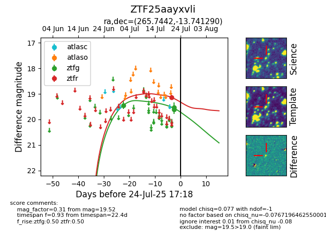

Target ZTF25aayxvli at 2025-07-24 17:18, see:
FINK: fink-portal.org/ZTF25aayxvli
Lasair: lasair-ztf.lsst.ac.uk/objects/ZTF25aayxvli
ALeRCE: alerce.online/object/ZTF25aayxvli
alt names
ZTF25aayxvli (ztf,fink)
coordinates:
equatorial (ra, dec) = (265.7442,-13.74129)
galactic (l, b) = (12.7216,+8.40152)
photometry
last ztfg=19.52, ztfr=19.14
3 ztfg, 1 ztfr detections
